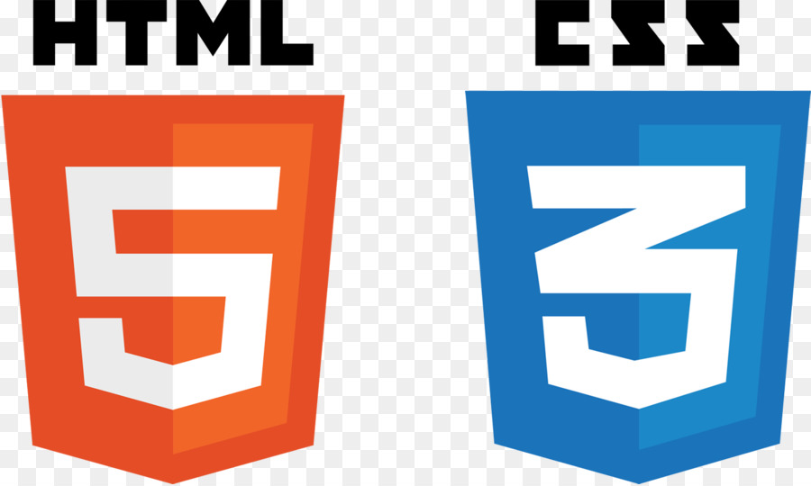

Vivek Kanpa
Hey, I'm Vivek! | I'm a tech geek and data nerd focused on designing robust software systems and transparent models to resolve challenges in big data. I'm a scientist, a runner, and a student.
Experience
Software Engineering Intern
How can we reuse our chemical inhibitors to target new cancerous proteins?
I led a research project to discover clusters of similarly-structured cancer driver proteins and detect remote homologies for efficient drug discovery. I built an end-to-end data pipeline to scrape, analyze, and cluster the human proteome on structural similarities. I deployed an interactive polar dendrogram web app with JS to visualize protein clusters with overlayed mutational frequency data. (Read more about the computational approach here.)
Computational Biology Co-op
Automation and machine learning scientist in Redwood City, CA. Three of my major projects included:
- Developing a novel graph convolution network (DeepChem, sklearn) that increased predicted drug permeability by 26%
- Building automated analysis tools for mass spectrometry and survival assays; led to discovery of novel quadcomplex structure with undisclosed biomarker for future drug development
- Initiating a companywide intranet hub to host data adaptor tools for scalable research operations
Software Engineering Co-op
Full stack web developer for Global Biologics in Cambridge, MA. Two of my major projects included:
- Designing end-to-end web apps with Django for protein quantification assay (HTP Lunatic) and HPLC chromatography (Agilent 1260 Infinity) from assay completion to database upload
- Enabling HTP assay workflows by building a web application to translate scientists' experimental layouts into instructions for Lynx automated robotic fulfillment
Education
University College Dublin
- One of twelve Mitchell Scholarship awardees across the United States; funding any graduate discipline at any Irish institution
- Graduate research assistant for AI PREMie, named a Global Top 100 Excellent Project by UNESCO and the IRCAI
- Ran the Galway Bay Marathon in sub-3:30, now training for Connemarathon (39.3 miles) in April 2024
Northeastern University
- Awarded $10,000 in grant funding from three internal Northeastern PEAK Awards to study cell signalling and gene expression protecting neurons from oxidative stress
- Worked as a teaching assistant for CS1800 (Discrete Structures), GE1501 (Cornerstone of Engineering), and BIOL2309 (Biology Project Lab)
- Second-author publication in Brain Sciences for discovering mPFC activity linked to self-deception during peer pressure
- Worked as a Resident Assistant to help first-year students transition to college
- Ran two marathons in San Francisco and Sacramento (PR: 3:39)
Skills
-

-

-

-

-

-

-

-

- Machine Learning Algorithms
- Object-Oriented Design
- System Architecture
- Feature Engineering
- Database Design
- Project Alignment
- Vibe Engineering (I have great vibes)
Interests
Apart from being a software developer, I love to stay active and stay learning. I enjoy playing basketball, tennis, pickleball, and frisbee. I enjoy reading non-fiction and memoirs; I'm reading The Almanack of Naval Ravikant and The Emperor of All Maladies and stay up to date with Nature and The Science Times as best I can.
I can't tell you what's trending on Netflix, but I can talk your ear off about music. Daniel Caesar and The Weeknd are running my summer this year. I'm wrapping up my time as a music producer and radio DJ, but check out my original music here and a playlist of my favorites here!
Projects
- Visit My Blog!
- Predicting Drug Permeability
- Onco-proteome Data Visualization
- Predicting Climate Change Trends